1. Introduction
Niord (Nautical Information Directory) is a system for producing and publishing Navigational Warnings (NW) and Notices to Mariners T&P (NM).
It was originally developed as part of the EfficienSea2 EU project and subsequently implemented as a production system for the Danish Emergency Management Agency.
Some of the main features of Niord are:
-
Niord provides an advanced and highly customizable production system for NW and NM T&P.
-
It includes a plug-in architecture for NW and NM message promulgation via e.g. mailing lists and Twitter.
-
Niord makes NW & NM messages accessible via a Public REST API.
-
Niord adopts a combined NW & NM message model.
2. Administrators Manual
A user in Niord always works in the context of a current domain. Domains are used to separate NW & NM messages into more manageable lists - you could e.g. have a domain for NW messages, a domain for NM messages, a domain for firing exercises (also NWs), or indeed domains for separate regions with separate time-zones, etc.
A user has separate roles in each domain. The available roles are:
-
User: The user role can be assigned to e.g. case officers that should have access to see, proof-read and comment on un-published NW and NM messages.
-
Editor: Editors compose and manage the life cycle of an NW or NM message.
-
Admin: An administrator of a domain will have additional access to e.g. manage the base data (sea charts, publications, etc.) of the Niord system.
-
Sysadmin: A very special role that should be held only by the person(s) actually setting up and managing the Niord system.
The roles listed above are hierarchical in the sense that a sysadmin can do anything an admin can do, who in turn can do anything an editor can do, and so forth.
This document serves as a user manual for administrators of a domain.
| Please use a newish Chrome, Safari or Firefox browser when using Niord. |
3. Admin Page
The Admin area is where administrators look after the base data that editors work with: the nautical charts, the areas, the publications and their categories, the sources, the users and contacts, and the mailing lists. Open it with Admin in the menu at the top of the page; it opens on its Overview page.
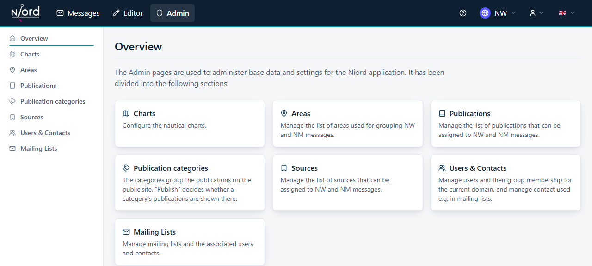
3.1. Finding Your Way
The list down the left side of the Admin area holds its sections: Overview, Charts, Areas, Publications, Publication categories, Sources, Users & Contacts and Mailing Lists. It stays on screen, so you move from one section to another in one click. The Overview page has a card for each section with a line on what it is for; click a card to open the section.
Each section has a page of its own, with its address in the browser, so you can bookmark a section or send a colleague a link to it. Help, the question mark in the header, opens the chapter of this manual that describes the page you are on, in a new browser tab.
Most sections edit a record in a panel that slides in from the right over the list, a drawer: open it with the pencil next to a row, or with the button that adds a new record. Cancel, or the cross at the top of the drawer, closes it; when you have changed something, Niord asks before it throws your changes away. The Areas section edits beside its tree instead.
3.2. Who Can Use the Admin Area
You see Admin in the menu when you hold the Admin or the Sysadmin role in the domain you are working in, the one named in the header. Roles are held per domain (see Administrators Manual): only the role of the current domain counts. So a user can be an administrator in one domain, for example "NW", and only an editor in another, for example "NM"; when that user switches to "NM", the Admin item leaves the menu.
Some base data, such as the charts, the areas and the sources, is shared by all domains. An administrator of the "NW" domain can therefore change the charts while working in "NW", but not while working in "NM", although they are the same charts. In practice an administrator of one domain is usually an administrator of all of them, but it is worth knowing.
A system administrator sees a second item, Sysadmin, with the settings of the system itself; it is described in the System Administrator Manual. Some actions in the Admin area are for system administrators only, such as creating mailing lists; the chapters say where.
4. Charts
The Charts page keeps the list of nautical charts. Editors add charts to notices to mariners and navigational warnings, and readers can filter messages by chart. Open it with Admin > Charts. Charts are shared by all domains.
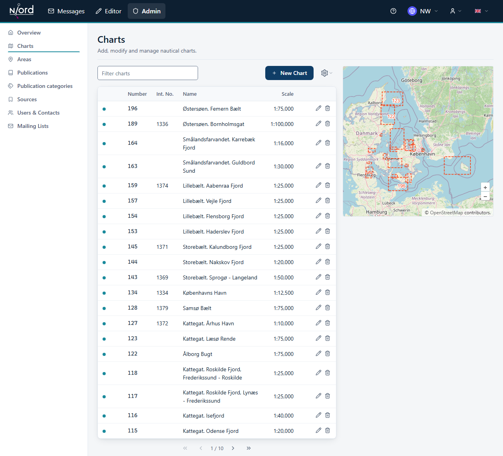
The list shows each chart’s Number, its international number (Int. No.), its Name and its Scale. The dot at the start of a row is coloured for an active chart and grey for an inactive one. The list shows 20 charts at a time; the pager below it moves between the pages.
To find a chart, type in Filter charts above the list. The text is looked for, in any case, in the chart number, the international number, the name and the horizontal datum. The cross in the field clears it.
The map beside the list shows the extents of the charts on the current page, each labelled with its number (and its international number, after INT). Drag the map to move it, and zoom with the mouse wheel or the + and − buttons.
4.1. Adding or Editing a Chart
Click New Chart above the list to add a chart, or the pencil, Edit chart, on a chart’s row to change it. The chart opens in a drawer, New Chart or Edit Chart:
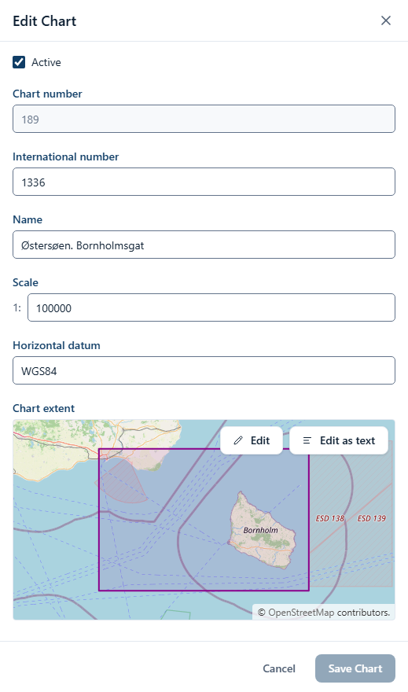
| Field | Description |
|---|---|
Active |
Only an active chart can be given to a message. A new chart is active. |
Chart number |
The national number of the chart. It must be unique, and it is required. It is set when you add the chart and cannot be changed afterwards: to renumber a chart, add a new one and make the old one inactive. |
International number |
The international number of the chart, when it has one. |
Name |
The name of the chart. |
Scale |
The scale of the chart, written after "1:". It can be used to sort the charts of a message. |
Horizontal datum |
The horizontal datum of the chart, WGS84 for a new chart. Niord does not use it otherwise. |
Save Chart saves the chart and closes the drawer; it can be clicked once you have changed something and the chart has a number. Cancel closes the drawer without saving.
4.1.1. Chart Extent
The Chart extent map at the bottom of the drawer shows the area the chart covers. A chart without an extent says No extent defined yet. Two buttons on the map change it:
-
Edit opens the extent in the position editor, which fills almost the whole window. Draw the extent with Box (a rectangle) or Area (a polygon); Select moves and changes what is drawn, and Delete removes it. A chart may have more than one box or polygon. OK puts the extent into the drawer, and Cancel leaves it as it was.
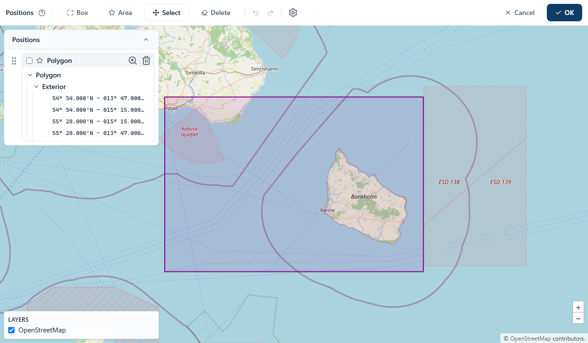
-
Edit as text opens the extent as text, with a small map that shows what you type. You can paste the corners of the chart from another document, for example. Save geometry puts the extent into the drawer; it replaces the extent the chart had.
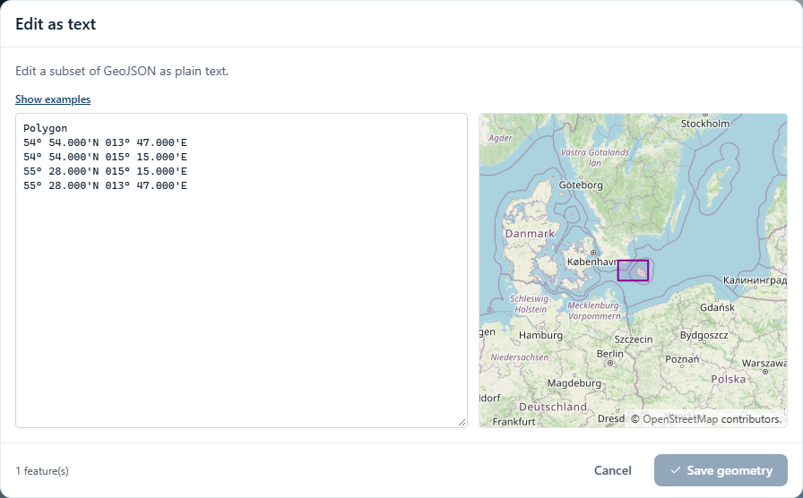
The position editor and its text format are described in the Position Editor chapter of the User Manual for Editors; for a chart it has only the drawing tools listed here. Its Actions menu, the cog, holds Clear all, Zoom to extent, Edit as text and Import geometry and, once something is selected, Merge geometries, Split geometries and Convert where they apply. Import geometry takes the extent from another area (From Area), from GeoJSON pasted as text (From Text) or from a list of UTM coordinates (From UTM) (Importing Positions).
The extent is part of the chart: it is saved with Save Chart, like the other fields.
4.2. Deleting a Chart
Click the bin, Delete chart, on a chart’s row, and confirm with Delete Chart?. A chart that is given to a message, in any status, cannot be deleted: Niord says Error deleting chart and keeps it. Make such a chart inactive instead, so it can no longer be given to new messages.
4.3. Importing and Exporting Charts
The cog, Chart actions, beside New Chart holds the export and the import:
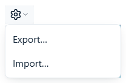
-
Export… opens every chart, as JSON, in a new browser tab, where you can save it as a file.
-
Import… opens Upload Charts File. Choose a JSON file, or drop it on the dialog. The file is imported by a batch job, the chart-import, which runs in the background: Upload Result shows the answer to the upload, and a system administrator can follow the job on the Batch Jobs page. A chart in the file that has the number of an existing chart updates it; any other is added.
The file holds a list of charts in the format of the export. For example:
[
{
"chartNumber": "198",
"internationalNumber": 1301,
"active": true,
"scale": 75000,
"name": "The Baltic Sea, Fakse Bugt and Hjelm Bugt",
"geometry": {
"type": "Polygon",
"coordinates": [
[
[ 12.0, 54.74166667 ],
[ 12.76666667, 54.74166667 ],
[ 12.76666667, 55.38333333 ],
[ 12.0, 55.38333333 ],
[ 12.0, 54.74166667 ]
]
]
},
"horizontalDatum": "WGS84"
},
...
]The geometry is GeoJSON, in longitude and latitude (WGS 84).
5. Areas
The Areas page keeps the tree of areas, such as "Denmark" > "The Baltic Sea". Editors give each notice to mariners and navigational warning its areas; messages are listed, sorted and filtered by them, and the title line of a message starts with them. Open the page with Admin > Areas. Areas are shared by all domains, although a system administrator can limit the areas a domain uses (Domains).
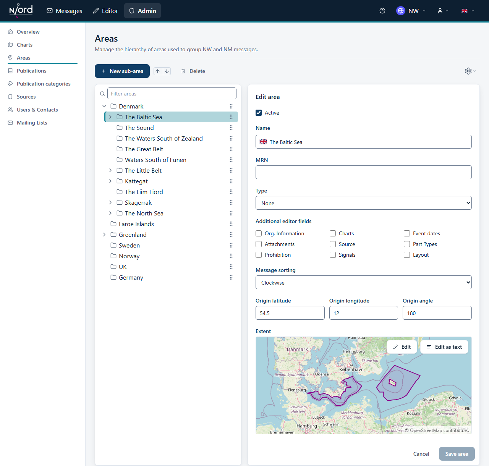
The page has two parts: the area tree on the left and, beside it, the editor of the area you select.
The tree works like the folders of a file system: click the arrow before an area to show or hide its sub-areas, and click an area’s name to open it in the editor. An inactive area is shown in grey italics. To find an area, type in Filter areas at the top of the tree; the tree then shows the areas whose names hold the text, unfolded with all their sub-areas, and the areas above them.
When the deployment writes its messages in more than one language, a Model language list at the right of the toolbar chooses the language the tree shows the names in. It changes only what the page shows, not the language of the application. With one language, the list is not shown.
5.1. Adding or Editing an Area
To change an area, select it in the tree. Its fields open beside the tree, under Edit area.
To add an area, click New area when no area is selected: the new area becomes a root area, at the top of the tree. With an area selected, the button is called New sub-area, and the new area becomes a sub-area of the selected one; the editor shows that area as its Parent area. The button waits until the selected area has loaded. To add a root area while an area is selected, click Cancel first, which clears the selection.
The fields of an area:
| Field | Description |
|---|---|
Active |
Only an active area can be given to a message. A new area is active. |
Name |
The name of the area, with a field for each language the deployment writes its messages in (the flag before each field shows which). The name in the deployment’s default language, a setting of the system administrator (English unless it is changed), is required. |
MRN |
Optionally, a Maritime Resource Name: a unique name of the form |
Type |
Optionally, the kind of area: Country or Firing area (Firing Areas). None is an ordinary area. |
Additional editor fields |
Fields of the message editor that are shown when a message has this area, although the message’s series does not show them: Org. Information, Charts, Event dates, Attachments, Source, Part Types, Prohibition, Signals and Layout. For example, a firing area can show the Signals field, which navigational warnings do not normally have. |
Message sorting |
How the messages of this area and its sub-areas are sorted; see Message Sorting. |
Origin latitude, Origin longitude, Origin angle |
The centre and the starting bearing of a Clockwise or Counter-clockwise sorting. The fields are shown only for those two. |
Extent |
The geographical extent of the area; see Extent. |
Save area saves the area; it can be clicked once you have changed something and the area has a name. Cancel closes the editor without saving and clears the selection.
While you have unsaved changes in the editor, Niord asks before it lets you select another area, add one or leave the page (Unsaved changes), and the browser warns you before it reloads or closes the page.
5.1.1. Message Sorting
When the message list is sorted by area, the Message sorting of an area decides the order of the messages within it:
| Message sorting | Description |
|---|---|
Area order |
The default (the field left at Area order). The messages follow the order of their areas in the tree: in the tree above, "The Baltic Sea" comes before "The Sound", so the messages of "The Baltic Sea" come before those of "The Sound". |
North-South |
The messages of the area, and of its sub-areas, are sorted from north to south by the latitude of their centre. |
South-North |
The reverse of North-South. |
East-West |
The messages are sorted from east to west by the longitude of their centre. |
West-East |
The reverse of East-West. |
Clockwise |
The messages are sorted clockwise around the position given by Origin latitude and Origin longitude, starting at the bearing given by Origin angle, in degrees. |
Counter-clockwise |
The reverse of Clockwise. |
A sorting applies to the area and every area below it, so only one area on a branch of the tree can have one: when an area above the selected one already has a sorting, the editor does not show the Message sorting field.
Editors can change the order of the messages in an area by hand afterwards, as described in the Sort Area Action section of the User Manual for Editors. The sorting of an area is applied to a message each time the message is saved before it is published; to apply a changed sorting to the messages already published, use Re-index published messages (The Area Actions Menu).
5.1.2. Extent
The Extent map at the bottom of the editor shows the area’s geographical extent; an area without one says No extent defined yet. Niord uses the extent, for example, to suggest areas for a message from its positions. Two buttons on the map change it:
-
Edit opens the extent in the position editor, which fills almost the whole window. An area can be drawn with Point, Line, Area (a polygon) and Box; Select moves and changes what is drawn, and Delete removes it. OK puts the extent into the editor, and Cancel leaves it as it was.
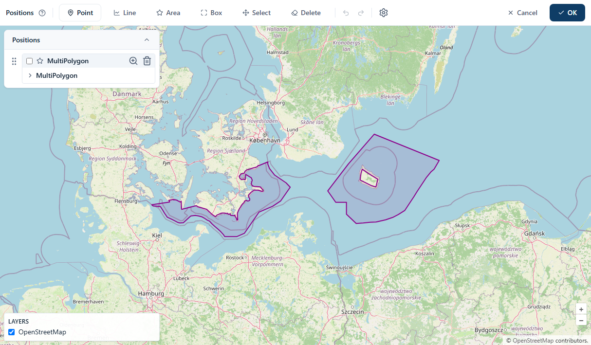
-
Edit as text opens the extent as text, with a small map that shows what you type; it works as for a chart (Chart Extent).
The position editor, its text format and its Import geometry action are described in the Position Editor chapter of the User Manual for Editors. The extent is saved with Save area, like the other fields.
5.2. Reorganizing Areas
-
To move an area up or down among the areas of the same parent, select it and click the arrows Move area up and Move area down in the toolbar. They work while the area’s editor has no unsaved changes.
-
To move an area to another parent area, drag it by the grip at the right end of its row and drop it on the new parent, or on the empty space below the tree to make it a root area. Niord asks first (Move area?) and names the area and its new parent.
5.3. Deleting an Area
Select the area and click Delete in the toolbar, then confirm with Delete area?. The area is deleted with all its sub-areas.
An area that is in use cannot be deleted: when the area, or one of its sub-areas, is given to a message in any status, has firing periods or is used by a domain, Niord says Error deleting area and keeps it. Make such an area inactive instead.
5.4. The Area Actions Menu
The cog, Area actions, at the right of the toolbar holds the export, the import and two actions that put the sort order right:
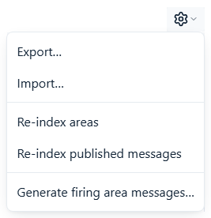
-
Export… and Import… are described in Importing and Exporting Areas.
-
Re-index areas computes the order of the whole area tree again, the order messages are sorted in by area. Niord does this by itself every hour, so you need it only to see a change at once.
-
Re-index published messages computes again where each published message of the current domain belongs in its area, from the message sorting of its area. Use it after you have changed the Message sorting of an area. It overwrites the order that editors have set by hand with the Sort Area action, in every area of the domain.
-
Generate firing area messages… is shown only in a domain that has a firing schedule; see Firing Areas.
Both re-index actions say Sort order updated when they are done.
5.5. Firing Areas
An area with the Type Firing area is a firing area: a place where the armed forces practise firing, which editors give firing periods on the Schedule page and which Niord warns of with firing exercise messages. How the parts fit together is described in the Firing Schedules chapter of the System Administrator Manual, and the editors' side in the Firing Area Schedule chapter of the User Manual for Editors.
The administrator’s part is the firing areas themselves: add each one in the area tree, usually under the waters it lies in, give it the type Firing area, a name, an extent and, when it is to be scheduled, keep it active. The Signals additional editor field is useful for a firing area.
5.5.1. Generating Firing Area Messages
The domain of the firing areas holds one message for each firing area, describing it: its limits, its signals and whom to contact. Niord can draft these messages for you. In the domain of the firing areas (switch to it in the header), open the cog menu and click Generate firing area messages…:
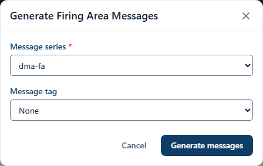
-
Message series: the series of the current domain the messages are written in. Required.
-
Message tag: optionally, a tag the messages are put in, so you can find them together.
Generate messages drafts one message for every active firing area of the domain: a miscellaneous notice for a series of notices to mariners, or a local warning for a series of navigational warnings, with the firing area as its area, the area’s extent as its positions, the charts the area crosses, and the category "Firing Exercises". Its title is made from the area. The drafts are then completed and published by the editors like any other message. Each click makes a new set of drafts, so generate them once.
5.6. Importing and Exporting Areas
Export… in the Area actions menu opens the whole area tree, as JSON, in a new browser tab, where you can save it as a file. Import… opens Upload Areas File: choose a JSON file, or drop it on the dialog. The file is imported by the batch job area-import in the background; Upload Result shows the answer to the upload, and a system administrator can follow the job on the Batch Jobs page.
The file holds the root areas at its top level, and each area’s sub-areas in its children. The
imported areas are merged into the tree: an area with an MRN is matched with the existing area of
the same MRN; otherwise a sub-area is matched with the existing area under the same parent that has
the same name in one of the languages. An area at the top level of the file without a matching MRN
is matched by name with any area of the tree, not only a root area, so give a root area an MRN, or
a name no other area has. A matched area is updated, and any other area is added.
For example:
[
{
"mrn": "urn:mrn:iho:country:dk",
"active": true,
"descs": [ { "lang": "en", "name": "Denmark" } ],
"type": "COUNTRY",
"geometry": {
"type": "MultiPolygon",
"coordinates": [ ... ]
},
"children": [
{
"active": true,
"descs": [ { "lang": "en", "name": "The Baltic Sea" } ],
"geometry": {
"type": "MultiPolygon",
"coordinates": [ ... ]
},
"children": [ ... ],
"messageSorting": "CW",
"originLatitude": 54.5,
"originLongitude": 12.0,
"originAngle": 180
},
...
]
},
...
]The type is COUNTRY or FIRING_AREA, and the messageSorting one of NS, SN, EW, WE,
CW and CCW. A deployment that writes its messages in several languages gives a descs entry,
with its lang, for each.
6. Publications
Niord keeps the publications that go out alongside the messages: the weekly Notices to Mariners, a list of the temporary and preliminary notices in force, a yearly compilation, an uploaded handbook, a link to a list of lights. Some of them Niord makes itself from the messages; others are files or web addresses that you add. A publication can be cited from a message where its settings allow it (see Basics), and a publication in a public category is offered for download on the public site.
You manage publications on the Publications page of the Admin area: open Admin in the main menu, then Publications in the menu on the left. The page needs the administrator role. Each publication belongs to one domain (see Domains: Owner, Citing and Moving), so the page lists the publications of the domain you have chosen in the header; choose another domain there to work on its publications.
The categories that group the publications on the public site have a page of their own, described in the next chapter, Publication Categories.
6.1. Series, Issues and One-off Publications
Four words describe every publication in Niord:
| Term | What it is |
|---|---|
Series |
A publication that comes out again and again, for example the weekly Notices to Mariners. The series holds the settings that all its issues follow: its category, what its content is, how often it comes out, how its issues and files are named and, for a series that Niord makes from the messages, which messages it selects. |
Issue |
One released document of a series, for example the Notices to Mariners of week 36. An issue is Open while it is being prepared, Published once it has gone out, and Withdrawn if it was taken off the public list afterwards. Every issue has a permanent link of its own. |
One-off publication |
A publication that comes out once: an uploaded document, a link to a document elsewhere, or a publication that only exists so that messages can cite it (a list of wrecks, a journal number). A one-off publication is a series with exactly one issue. |
Category |
A group of publications, such as "Notices to Mariners" or "External publications". The category decides whether its publications are shown on the public site, and in which order. |
An issue carries four moments, and it helps to keep them apart:
| Moment | What it means |
|---|---|
Content period |
The stretch of time whose messages the issue carries, from its Period start to its cut-off. The next issue’s content period starts where this one’s ended. |
Cut-off |
The instant at which it is decided which messages are in the issue. While the issue is open, its Planned cut-off is only a plan; the cut-off is stamped when you publish. |
Published |
When somebody pressed Publish and the issue went out. |
Public period |
When the public site lists the issue. It starts when the issue is published and normally ends when the next issue of the series is published. |
How often a series comes out and how it selects its messages are two separate settings. A weekly Notices to Mariners and a weekly list of the notices in force both come out every week, but the first carries the messages published during the week, while the second carries every message that is still in force at the cut-off, however old it is (see Criteria and Time Relation).
6.2. Who May Do What
| Role | What it allows |
|---|---|
Administrator |
Everything in this chapter and the next: creating and changing series, one-off publications and categories, preparing, publishing, amending and withdrawing issues, and adding or leaving out messages by hand. An administrator changes the publications of the domains he or she administers; a publication of another domain can be read but not changed (see Domains: Owner, Citing and Moving). |
publication-curate |
A separate role that allows adding and leaving out messages by hand on an open issue. Since the pages for publications are in the Admin area, the role is only useful together with the administrator role. |
Editor |
Cites published issues in a message, through the Publications field of the message editor, and sees which issues a message has gone out in (see the Publications field in the editor manual). |
System administrator |
Manages the print reports that render the documents of the generated series (see Print Reports in the system administrator manual), besides everything an administrator may do. |
6.3. The Publications Page
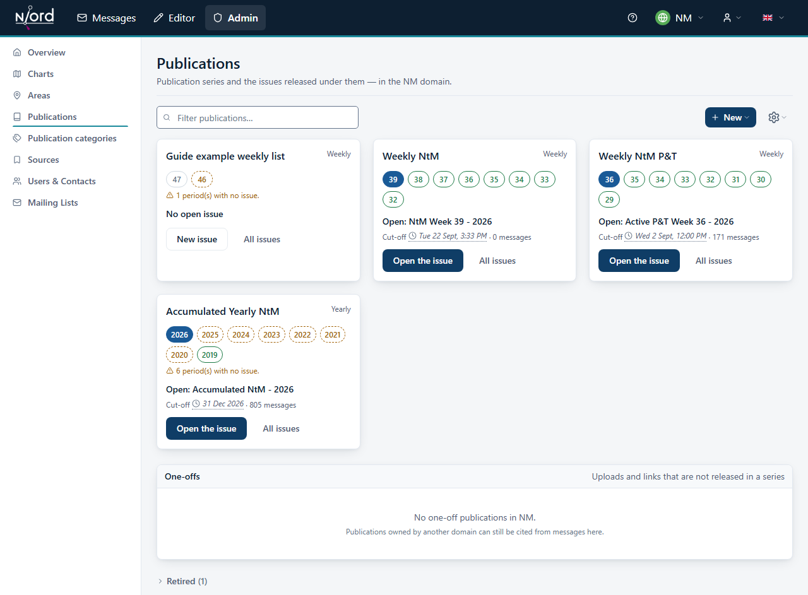
The page shows the publications of the current domain in three groups:
-
The series cards. One card for each active or draft series, three to a row.
-
One-offs. A table of the one-off publications.
-
Retired. The series that are no longer used, folded away under a line with their count. Click the line to show them; click a name to open the series.
Above the groups:
-
Filter publications… narrows all three groups to the publications whose name holds the text you type. The filter is kept in the page’s address, so a filtered list survives a reload and can be sent as a link.
-
New creates a series or a one-off publication (New series, New one-off publication).
-
The cog menu Publication actions exports and imports series definitions (see Importing and Exporting Series Definitions).
6.3.1. The Series Card
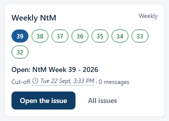
A card tells you at a glance whether a series is keeping up:
-
The name, which opens the series page, and how often the series comes out (Weekly, Yearly, No fixed cadence). A Draft badge marks a series that does not publish yet. A retired series has no card: it is listed in the Retired group.
-
A row of numbered cells: one cell for each of the last periods, numbered by week, month or year. A filled cell is an open issue, an outlined one an issue that went out, a dashed one a period for which nothing was released, and a quiet one a period still to come. Point at a cell to read its status and number of messages; click it to open that issue, or, for a missing period, the series page where the period can be created. A line under the cells counts the missing periods.
-
Open: <name> is the issue being prepared, with its expected Cut-off and the number of messages it holds so far. The cut-off is shown in italics with a clock, because it is only stamped when somebody publishes.
-
Open the issue goes straight to the open issue; All issues opens the series page. A series with no open issue offers New issue instead (see Creating an Issue).
A series with no fixed frequency has no periods to draw. Its card says how many issues it has and which came out last, and what kind of content its next issue would be (Issues are uploaded as PDF, Issues are external links). A series that has released nothing for several periods is marked dormant.
6.3.2. The One-offs Table
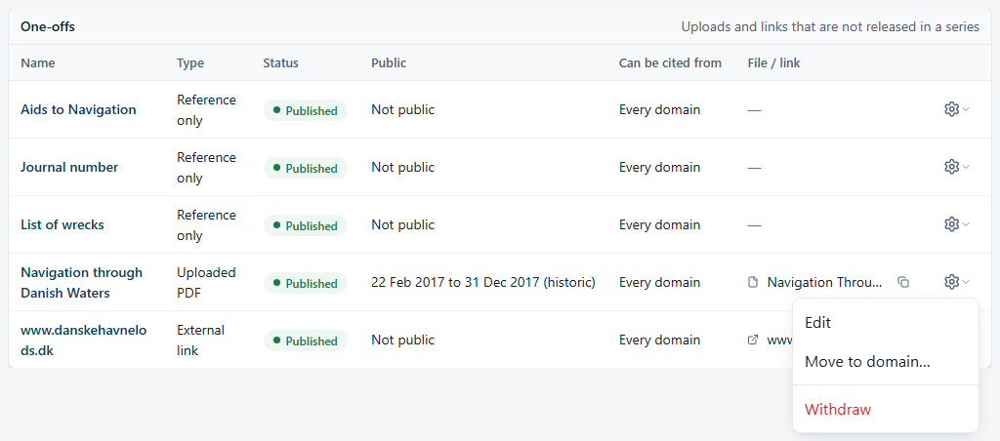
The table lists the one-off publications of the domain with their Type (Uploaded PDF, External link or Reference only), their Status (Draft, Published or Withdrawn), when they are Public on the public site, from which domains they Can be cited from and the File / link behind them, with a button that copies its address. Click the Public heading to sort the rows by the start of their public period, again to reverse the order, and a third time for the original order.
Click a name to open the publication’s own page (see One-off Publications). The cog at the end of a row offers Edit, Move to domain… (where you administer another domain to move it to) and, for a published publication, Withdraw.
When the domain has no one-off publications the table says so, and reminds you that publications owned by another domain can still be cited from messages here.
6.4. Creating and Configuring a Series
To create a series, click New and choose New series. To change one, open the series and click Settings. Both open the Series settings drawer, which has four tabs: Basics, Content, Frequency & naming and Criteria. A new series is created as a draft in the current domain and publishes nothing until you activate it (see Draft, Active and Retired Series).
To start from an existing series, open it and choose Copy series in its cog menu: the drawer opens as a new series with every setting of the original filled in, and a new Series ID to give.
6.4.1. Basics
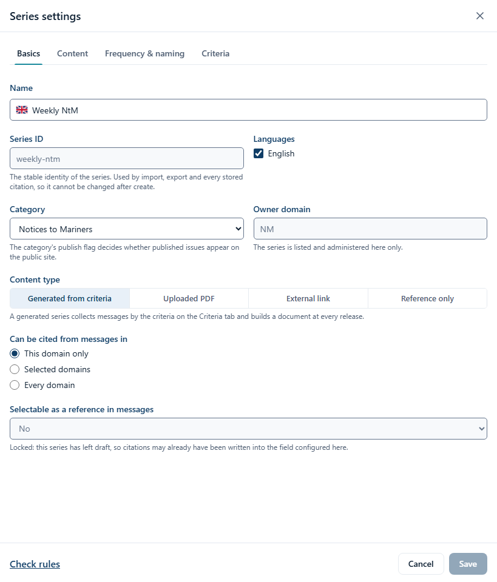
| Field | Description |
|---|---|
Name |
The name of the series, one field per language. |
Series ID |
The permanent identity of the series. Niord proposes one from the name; you can change it until the series is created, and never afterwards, because imports, exports and every stored citation use it. |
Languages |
The languages the series is written in. Each language gets its own name, patterns and, if wanted, its own file. |
Category |
The publication category the series belongs to. The category’s Show on the public site setting decides whether the published issues appear on the public site. |
Owner domain |
The domain the series belongs to: the current domain when it was created. It is shown, not chosen; see Domains: Owner, Citing and Moving for moving a series. |
What an issue holds: Generated from criteria (Niord selects the messages by the criteria on the Criteria tab and renders a document at every release), Uploaded PDF (a file you upload for each issue), External link (an address of a document elsewhere) or Reference only (no document; the publication exists to be cited). |
|
Can be cited from messages in |
From which domains a message may cite the series' issues: This domain only, Selected domains (tick the domains in the list that appears) or Every domain. Only the owner domain can change the series. |
Selectable as a reference in messages |
Whether editors can cite the series in a message, and in which list of the message: No (the series cannot be cited at all), Internal, or External (shown publicly on the message). It can be changed only while the series is a draft: citations already written live in the field that was chosen at the time. |
Reference format |
Shown when the series can be cited: how the citation reads on a message, one per language, for
example |
6.4.2. Content
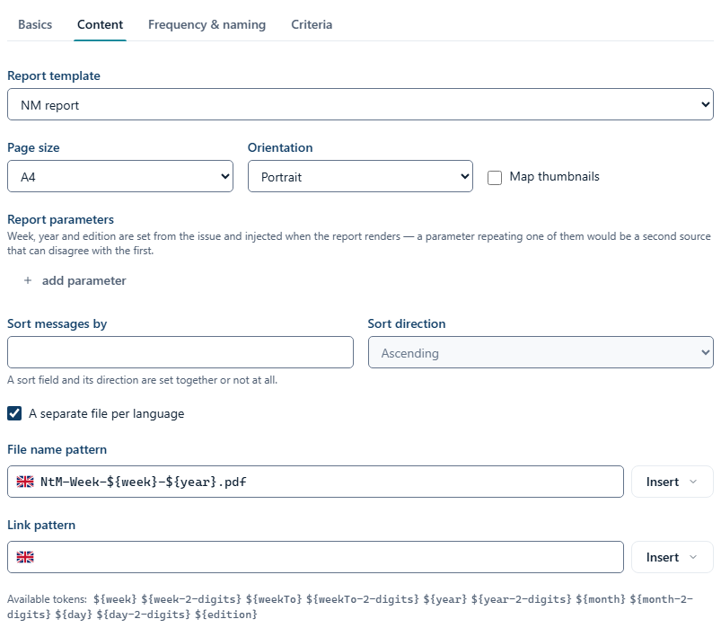
The fields of the report are shown for a series generated from criteria; a series of uploads or links has only the file and link patterns.
| Field | Description |
|---|---|
Report template |
The print report that renders the issue’s document, chosen from the reports a system administrator keeps (see Print Reports). A generated series cannot be activated without one. |
Page size, Orientation, Map thumbnails |
How the report is printed. |
Report parameters |
Values handed to the report, as name and value pairs (add parameter). Week, year and edition are set from the issue and cannot be typed here. Where the report names parameters of its own, they are offered to add. |
Sort messages by, Sort direction |
The order of the messages in the document. Set both or neither. |
A separate file per language |
Whether each language gets its own document, or one document serves every language. |
File name pattern |
How the document’s file is named, one per language, for example |
Link pattern |
For a series of external links: how the address of each issue is built. |
The patterns can use these tokens, which the Insert button beside each field also offers:
${week}, ${week-2-digits}, ${weekTo}, ${weekTo-2-digits}, ${year}, ${year-2-digits},
${month}, ${month-2-digits}, ${day}, ${day-2-digits} and ${edition}. They are filled in
from the issue’s cut-off: an issue is named after the week, month and year in which its content
period ends, read in the time zone of the series' domain. ${weekTo} is used by an issue that
covers more than one week, such as a double issue over a holiday ("Week 51-52"); it is empty
otherwise. The values can be overridden for one issue (see Tailoring an Issue).
6.4.3. Frequency & Naming
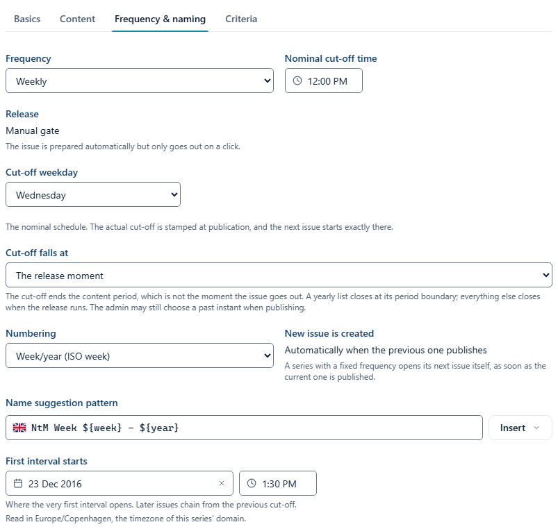
| Field | Description |
|---|---|
Frequency |
No fixed cadence, Daily, Weekly, Monthly or Yearly. |
Nominal cut-off time, Cut-off weekday, Cut-off month, Cut-off day of month |
The planned schedule: the time of day and, depending on the frequency, the weekday, the day of the month and the month on which a period normally closes. The actual cut-off is stamped when an issue is published, and the next issue starts exactly there. |
Release |
How an issue goes out. Manual gate: the issue is prepared automatically, but only goes out when somebody clicks Publish. This is the only way issues are released. |
Cut-off falls at |
Where the content period ends by default: at The release moment, or, for a yearly series only, at The start of the period or The end of the period. When publishing you can still choose the planned cut-off instead of the present moment. |
Numbering |
How the issues are numbered: Not numbered, Week/year (ISO week), Year and edition, Month/year or Running edition number. |
New issue is created |
Shown, not chosen. A series with a frequency opens its next issue itself as soon as the current one is published (Automatically when the previous one publishes); a series without one has each issue created by hand. |
Name suggestion pattern |
How a new issue is named, one per language, for example |
First interval starts |
For a series that selects messages published in an interval: where the very first content period opens. Later issues follow on from the previous cut-off. |
6.5. Criteria and Time Relation
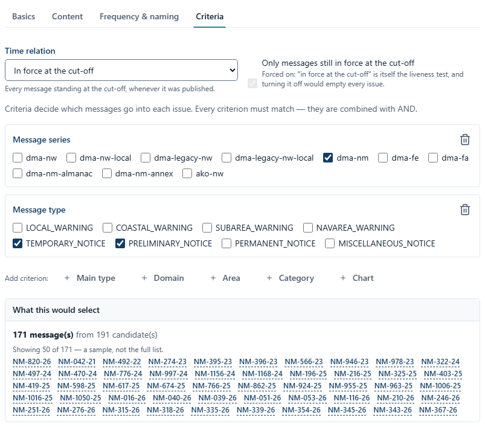
The Criteria tab decides which messages a series generated from criteria puts in each issue. It has two parts.
Time relation says how a message’s dates place it in an issue:
| Time relation | Which messages an issue holds |
|---|---|
Published in the issue’s interval |
Every message published between the previous cut-off and this one. Use it for a publication of what is new, such as the weekly Notices to Mariners. |
In force at the cut-off |
Every message that is still in force at the cut-off, whenever it was published. Use it for a list of what applies now, such as the temporary and preliminary notices in force. |
Compiled from another series |
Everything the issues of another series printed during the period. Use it for a yearly compilation (see Compilations). |
Only messages still in force at the cut-off leaves out the messages that were cancelled or had expired by the cut-off. For In force at the cut-off it is always on.
The criteria say which messages qualify at all. Add a criterion with the buttons after Add criterion: (Message series, Main type, Message type, Domain, Area, Category, Chart), then tick or pick its values. Every criterion must match: they are combined with AND, so a Message series criterion with the series of your notices to mariners and a Message type criterion with the temporary and preliminary notices select the temporary and preliminary notices of that message series. Within one criterion, any of the ticked values matches. Each kind of criterion can be used once, a series can hold at most eight criteria, and every series needs at least one message series or domain, so that it does not reach every message in the installation. Remove a criterion with its bin.
What this would select tries the criteria on the messages as you change them and shows how many messages they would select now, with a sample of their numbers and any warnings, for example messages that would also belong to another issue.
Where the old Niord used a free "message tag filter" expression and a message tag for each issue, the criteria and the time relation now do the work: an in-force list is In force at the cut-off with the criteria for the message types, and a weekly list of everything published in the week is Published in the issue’s interval.
6.6. Draft, Active and Retired Series
A series is in one of three states:
-
Draft: being set up. It accepts no issues and editors cannot cite it.
-
Active: in use. It accepts issues and appears in the message editor’s list of publications.
-
Retired: no longer used for new issues. The issues it has published stay on the public list, and their files stay at their links.
The state is changed from the cog menu Publication actions on the series page, which also holds Copy series and Move to domain…:
-
Activate checks the series' rules once more and activates it. A draft series also offers Activate the series… in the note at the top of its page.
-
Retire series asks for a reason, which is kept in the series' history.
-
Reinstate series makes a retired series active again, after checking its rules.
6.6.1. Checking the Rules
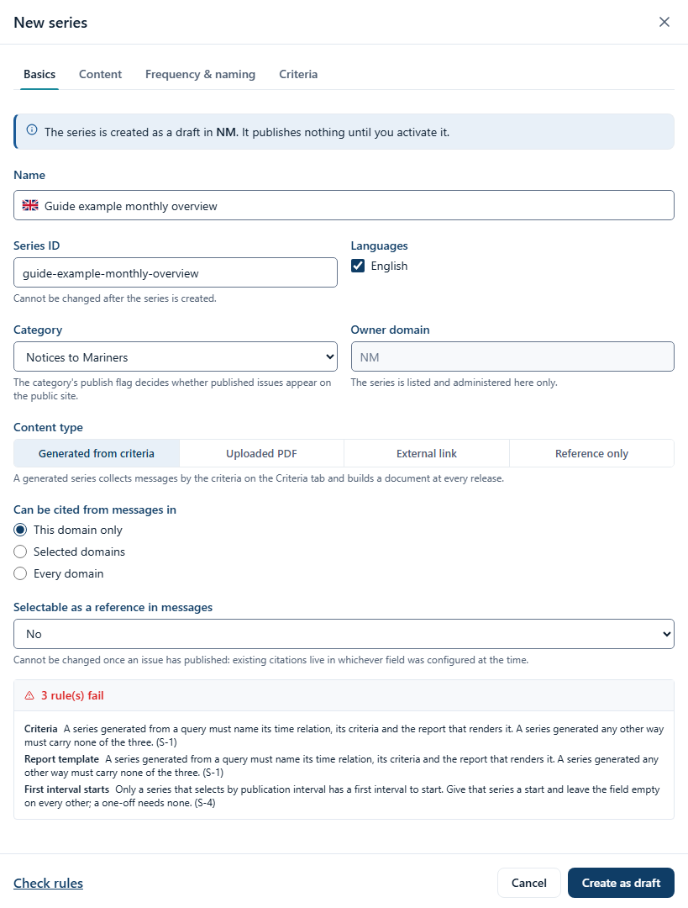
Before saving, click Check rules at the bottom of the settings drawer. Niord checks the series as it stands in the drawer, without saving it, and either says Every rule passes. The series can be activated. or lists each rule that fails, under the name of the field it concerns, for example that a series generated from criteria needs a report and at least one criterion. The same rules are checked when you save and when you activate the series, and a field that breaks one is marked in place.
6.7. The Series Page
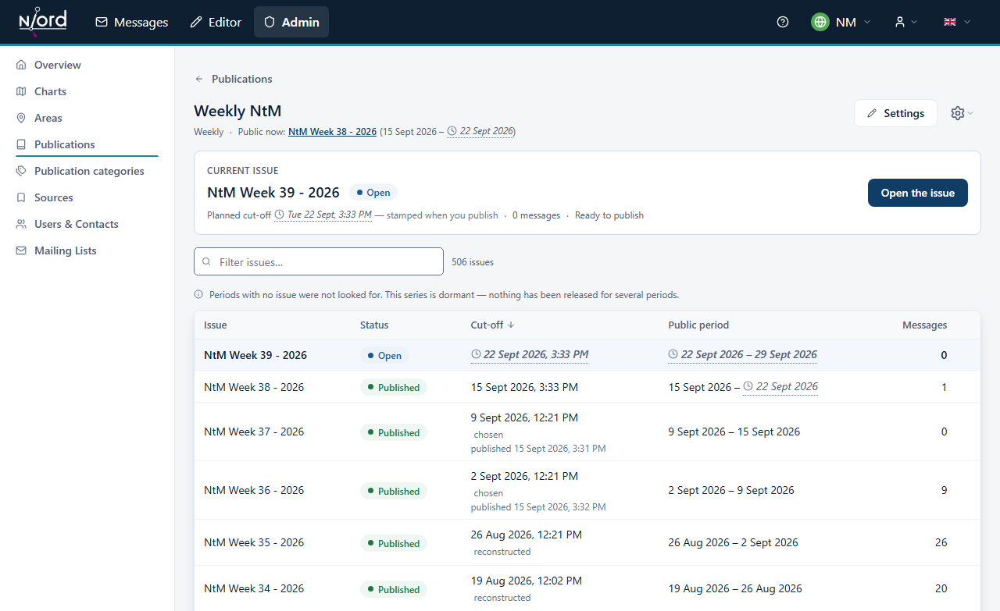
Click a series' name on the Publications page to open its page:
-
The header names the series, how often it comes out and what is Public now on the public site: the current issue and its public period. Settings opens the settings drawer, and the cog menu Publication actions holds Copy series, Move to domain… and Activate, Retire series or Reinstate series.
-
Current issue shows the open issue with its planned cut-off, the number of messages and how far it is from being published (Ready to publish, or the number of warnings), and Open the issue. When nothing is open, it says No open issue and offers New issue.
-
The issue list holds every issue of the series, newest first, 20 to a page, with its Status, Cut-off, Public period and number of Messages. Filter issues… narrows the list by name. Click Issue or Cut-off to sort by that column. A series numbered by edition (Year and edition, Running edition number) also has an Edition column, which sorts the same way. Click a row to open the issue.
-
History of the series, folded away at the bottom, records what was done to the series itself: its activation and retirement, a move to another domain, and the one line that is left when an issue is deleted.
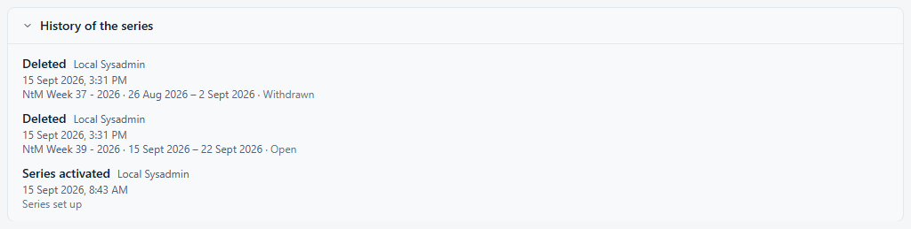
A cut-off that was not stamped when its issue was published is marked with how it was found: reconstructed for an issue carried over from the previous system, chosen for a cut-off picked by hand when publishing. A cut-off or public period in italics with a clock is still expected, not recorded.
For a series with a frequency, Niord also looks for periods with no issue. A period for which nothing was released shows as a Missing row, and the period being worked towards as an Upcoming row. On an active series of your domain, a Missing row has a Create button that opens the new issue dialog for that period. An Upcoming row has it only while no issue is open, because the series opens that period itself when the current issue is published. When the periods were not looked for, a line above the list says why: for example, that the series is dormant because nothing has been released for several periods. A series that has no issue at all says No issues yet instead of the list, with no rows for its periods: its card on the Publications page shows the missing periods, and New issue under Current issue opens the dialog for the first of them.
6.8. Creating an Issue
A series with a frequency opens its next issue by itself as soon as the current one is published, so you rarely create an issue by hand. You do so for a series without a fixed frequency, for a period that was missed, or when no issue is open: click New issue on the series card or the series page, or Create on a Missing or Upcoming row.
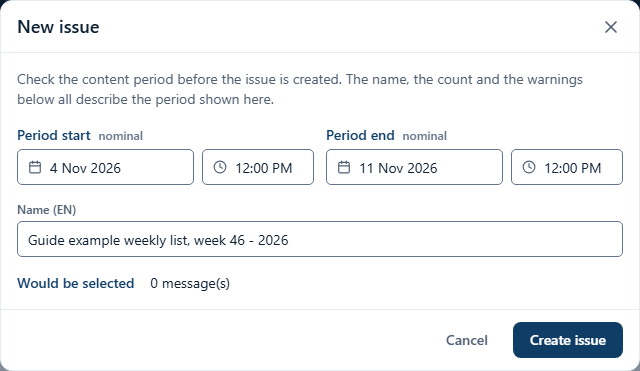
The New issue dialog shows the issue before it is created: its Period start and Period end (change them if the proposal is wrong), each with a word that says where the proposal came from, such as nominal for a moment taken from the series' schedule; its name in each language; and its edition, when it is not the first. Would be selected says how many messages the period would hold (Not counted when it cannot be counted, for example for a series that is not generated from criteria or a period with no end yet), and Chained from names the issue whose cut-off the period follows on from (a series' first issue has none). Warnings tell you what to know before you create it, for example that the period does not start where the previous issue closed, or, for a series that lists what is in force at the cut-off, that the period has no start. Click Create issue to create it.
6.9. Working on an Open Issue
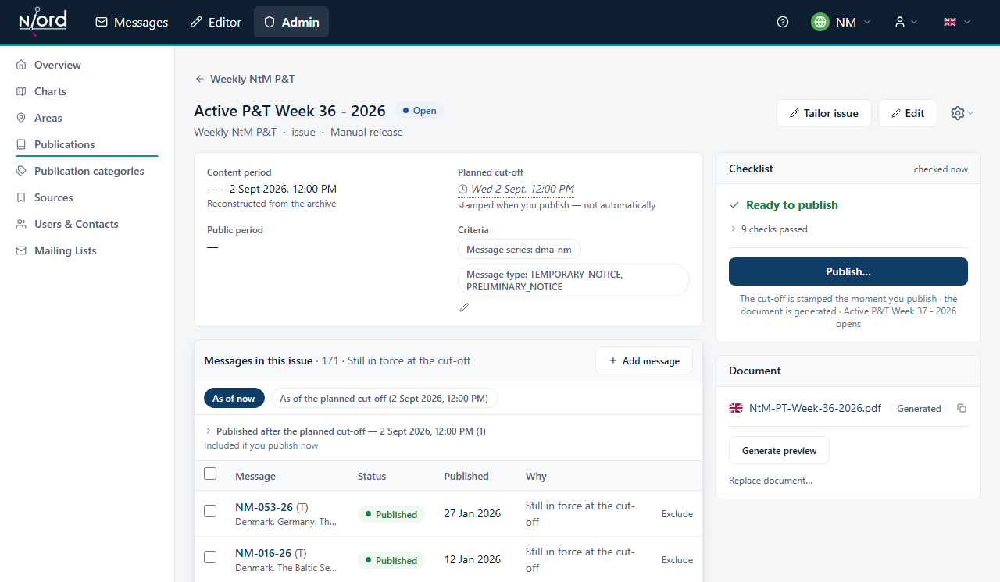
An open issue is the one being prepared. Open it with Open the issue on the series card or the series page. Its page shows:
-
The header: the issue’s name and status, the series, and how it is released. Tailor issue, Edit and the cog menu Publication actions are on the right.
-
The facts: the Content period (with how its start was found), the Planned cut-off, the Public period (empty until the issue is published) and the Criteria in use.
-
Messages in this issue: the messages the issue holds, with their Status, the date they were Published and Why they are in the issue (Published in the period, Still in force at the cut-off, Printed by its source issue, Added by hand).
-
Left out by the criteria: the messages near the issue that the criteria leave out, each with the reason.
-
On the right, the Checklist with the Publish… button (see The Checklist and Publishing), the Document and the History of the issue.
6.9.1. As of Now or As of the Planned Cut-off
An open issue is a moving target: messages are published, cancelled and corrected while you prepare it. The two buttons above the list show the issue As of now (what would go out if you published at this moment) or As of the planned cut-off. Messages published after the planned cut-off are gathered under Published after the planned cut-off, marked Included if you publish now or Not included at the planned cut-off, so you can see what your choice of cut-off decides.
6.9.2. Messages Left Out by the Criteria
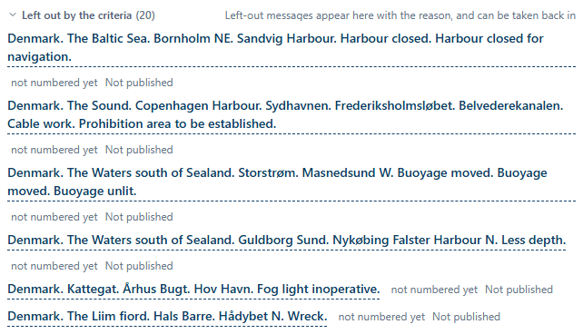
Click Left out by the criteria to see the messages that the criteria considered and rejected, each with the reason: Published before the period started, Published after the cut-off, Not in force at the cut-off, Not published, Does not match the criteria or No publication date. When the list is long, it shows the most recent and says so. Click a message to open it. A message left out wrongly can be added by hand (see Adding and Excluding Messages by Hand).
6.9.3. Editing the Period and Edition
Click Edit to change the issue’s Edition (usually 1; raise it when the same period goes out more than once), its Period start and its Planned cut-off. The issue’s name is changed with Tailor issue (see Tailoring an Issue), together with its file name and numbering. Moving the start changes which messages fall in the period; moving the planned cut-off changes the name the series suggests and what the planned view shows. What actually goes out is decided by the cut-off you confirm when you publish.
In the same editor you can tailor the Criteria for this issue alone, for example to leave out an area for one week. The issue then shows its own criteria; Use the series criteria again goes back to the series' ones. The pencil beside the criteria in the facts opens the same editor. Save keeps the changes; Cancel, or Cancel edit in the header, throws them away.
6.9.4. Tailoring an Issue
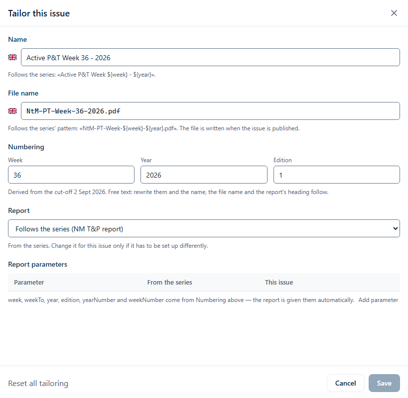
Tailor issue opens the Tailor this issue drawer, for the few things that have to differ from the series for one issue:
-
Name and File name in each language. Under each field Niord says what the series would suggest.
-
Numbering: the Week, Year and Edition printed on the issue. They are worked out from the cut-off, but are free text: write "51 & 52" for a double issue, and the name, the file name and the report’s heading follow.
-
Report and Report parameters: another report, or other parameter values, for this issue only.
A tailored field shows Follow the series again beside it, and Reset all tailoring undoes them all. A tailored issue is marked Tailored beside its name.
6.9.5. The Document
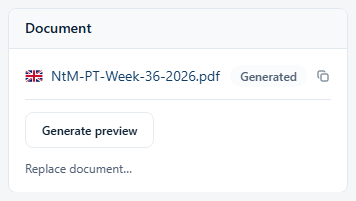
The Document card shows the issue’s file in each language and where it came from:
-
For a series generated from criteria the document is generated when you publish. Generate preview renders it now, as it would look, and Download preview opens it. Replace document… lets you upload a file of your own instead; an uploaded file is kept as it is, and publishing does not generate over it.
-
For a series of uploaded files, Upload file… adds the file, and Clear file removes it again.
-
For a series of external links, type the address in External link and click Save link.
6.10. Adding and Excluding Messages by Hand
The criteria decide which messages an issue holds, but you can overrule them for one issue. Every such decision needs a reason of 3 to 512 characters, is shown beside the message in the issue’s list and is kept in the issue’s history with your name and the time. Only an open issue can be changed this way.
To add a message that the criteria leave out, click Add message above the list. In the dialog, search the message by its number or title (only published, expired and cancelled messages of the domain can be added), choose it, type the reason and click Add to the issue.
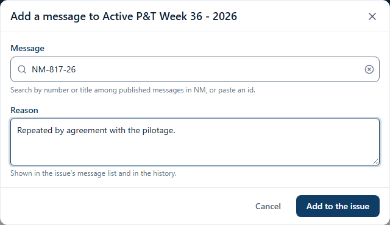
To take messages out, tick them in Messages in this issue and click Exclude selected, or click Exclude at the end of one row. Type the reason and click Exclude. The messages stay published; only what this issue contains changes.
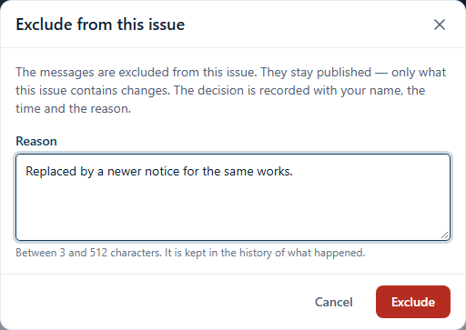
A message added by hand shows Added by hand and who added it; an excluded one stays in the list, marked as left out by you, with Include again. Withdraw decision removes a manual decision altogether, and the criteria decide again.
6.11. The Checklist and Publishing
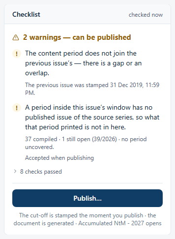
The Checklist on the right of an open issue checks whether the issue can go out, and is checked again whenever the issue changes. Its verdict is Ready to publish, a number of warnings that do not stop you (2 warnings — can be published), or a number of problems stopping the release. Each warning and problem is explained; click the line with the number of checks passed to see the others. The checks:
| Check | What it looks at |
|---|---|
The issue is open and its series is active |
Only an open issue of an active series can be published. |
The content period has a start |
A series that selects by interval needs a period start. |
The period starts where the previous issue ended |
A gap or an overlap with the previous issue. |
The cut-off is not in the future, is after the previous issue’s, is before the next issue’s |
A content period cannot end in the future, reopen a closed period or take content that has already gone out. |
No other issue covers this period |
Two issues of the same series sharing messages. |
The messages have been resolved; the number of messages is within the limit |
The issue’s messages could be worked out, and there are no more than 1,000 of them. |
No message cancelled after the cut-off is still counted |
A message cancelled after the cut-off that is still dated as in force at it. |
Every manual include or exclude still applies |
A decision made by hand that no longer concerns any message. |
Every language has a file; every language has a citation format; a report is configured |
What the document and the citations need. |
Every period of the source series has a published issue |
For a compilation: a source period with nothing published, or a source issue still open. |
A check that does not concern the issue, such as a report for a series of uploads, is left out: it is not shown, and it is not counted in the number of checks passed or in the verdict. That is why two issues can show a different number of checks passed.
To publish, click Publish…. The dialog asks for the cut-off:
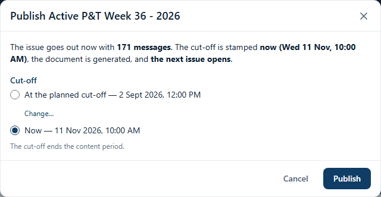
-
At the planned cut-off ends the content period at the planned moment. Change… moves the planned cut-off first.
-
Now ends the content period at the present moment.
The sentence at the top says what will happen: how many messages go out, when the cut-off is stamped, that the document is generated and, for a series with a frequency, that the next issue opens. If the checklist has warnings, they are listed and you acknowledge each before Publish can be pressed.
Publishing an issue:
-
stamps the cut-off and freezes the list of messages: later changes to a message no longer move it in or out of the issue;
-
generates the document from the series' report (unless a file was uploaded or linked);
-
opens the issue’s public period, and ends the public period of the issue it follows;
-
opens the next issue of a series with a frequency.
6.12. After Publishing: Amend, New Edition, Withdraw and Delete
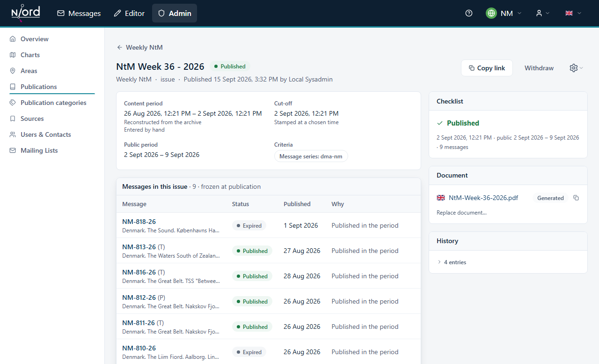
A published issue shows the messages that went out, marked frozen at publication. A message that has changed since then, for example expired, been cancelled or changed its type, keeps its place in the issue and gets a warning sign; point at it to read what changed. Amending the issue runs the selection again, so the issue in the picture, which was amended once, has no such sign. The Checklist card now shows when the issue was published, its public period and its number of messages, and the issue’s History keeps the checklist as it was at publication.
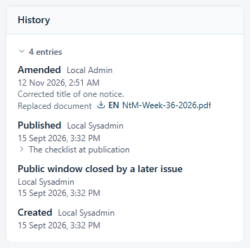
The header offers Copy link (the issue’s permanent address) and Withdraw, and the cog menu Publication actions the other actions:
-
Amend runs the selection again against the same cut-off and replaces the document where it stands, with the same links, the same public period and the same cut-off. Use it when something has to be corrected: messages cancelled, retyped or corrected since, or a change to the series' criteria or report. Amending asks for a reason; the replaced document is archived and can still be opened from the issue’s history (Replaced document). An issue carried over from the previous system cannot be amended: its messages and document are a historical record.
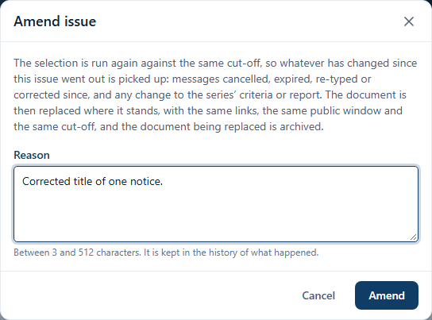
-
New edition creates a new, open issue for the same period, linked to this one. This issue stays the current one on the public site until the new edition is published. It is not offered on a series that opens its next issue by itself, nor on a one-off publication.
-
Withdraw takes the issue off the public list, with a reason. Its file and links stay, so the messages that cite it keep working. A withdrawn issue offers Reinstate, which puts it back on the public list with the public period it had.
-
Delete issue… removes an open or withdrawn issue for good, with its history. A published issue must be withdrawn first, and an issue that a message still cites cannot be deleted: Niord names the citing messages instead. The series keeps a one-line record of the deletion.
6.13. Compilations
A compilation collects what the issues of another series printed. A yearly accumulated Notices to Mariners, for example, is a series with the time relation Compiled from another series and the weekly Notices to Mariners as its Source series:
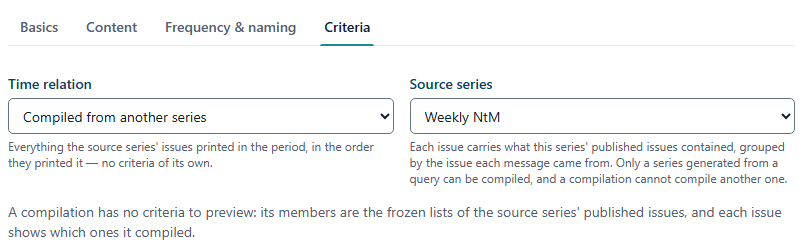
A compilation has no criteria of its own: its messages are the frozen lists of the source series' published issues. Only a series generated from criteria can be a source, and a compilation cannot compile another compilation.
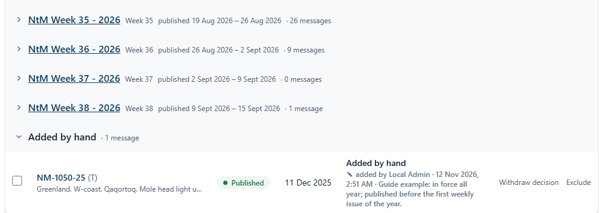
A compilation lists its messages grouped by the source issue they came from, with the week and the period of each; click a group to show its messages. Messages added by hand follow the source issues' groups in a group of their own, Added by hand: the picture shows the end of the list of an open compilation, the last source groups folded and the Added by hand group opened. While the compilation is open, the Source issues card on the right lists the source issues its period holds, and the checklist warns when a period of the source series has no published issue or a source issue is still open.
Once published, the compilation keeps the groups as they were at its cut-off:
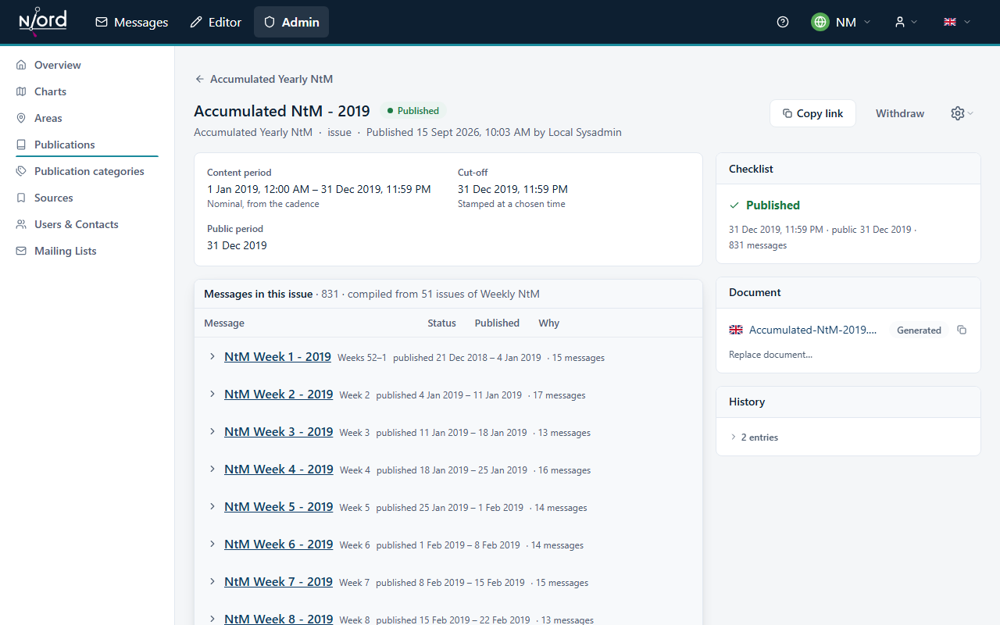
The document of a compilation is rendered by its own report, which a system administrator sets up in the print reports.
6.14. One-off Publications
To add a one-off publication, click New on the Publications page and choose New one-off publication.
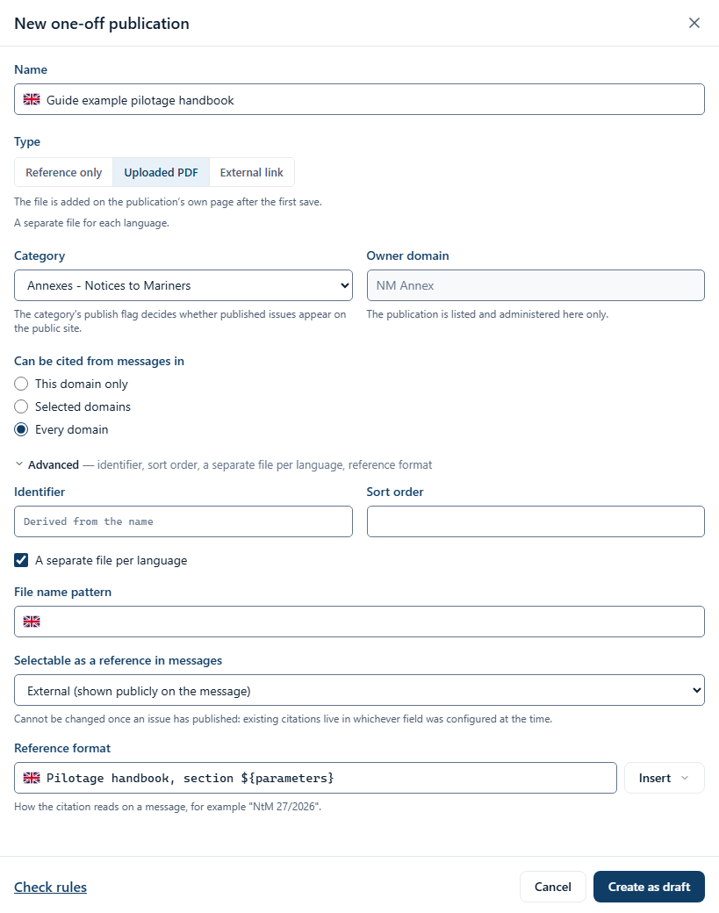
Fill in:
-
Name, in each language.
-
Type: Reference only, Uploaded PDF or External link (type the address in each language).
-
Category and Can be cited from messages in, as for a series. The Owner domain is the current domain.
-
Under Advanced, if needed: the Identifier (derived from the name when left empty; it cannot be changed later), the Sort order, A separate file per language, the File name pattern and whether and how messages can cite the publication (Selectable as a reference in messages, Reference format).
Check rules checks the publication without saving it, as for a series. Click Create as draft. The file of an uploaded publication is added after this first save, on the publication’s own page, which opens when you click its name in the one-offs table:
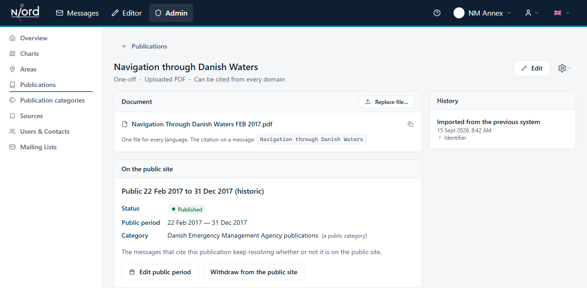
-
Document shows the file or the link, with Upload file… or Replace file…, and the citation a message will show.
-
On the public site says whether, and when, the publication is listed on the public site, with its status, its public period and its category. Publish releases a draft publication; Withdraw from the public site takes it off the site (with a reason), and Publish again puts it back. Messages that cite the publication keep working either way.
-
Edit public period sets when the publication is on the public site. A start in the future is allowed: the publication is prepared now and appears on the day. A publication with no end stays on the site until somebody ends the period.
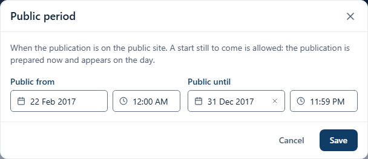
-
History records what was done to the publication.
-
Edit opens the same drawer as on creation, and the cog menu Publication actions offers Move to domain….
6.15. Domains: Owner, Citing and Moving
Every series and one-off publication has an Owner domain: the domain where it is listed and administered, and whose time zone its cut-offs are read in. Only an administrator working in the owner domain can change it.
Who may cite it is a separate setting, Can be cited from messages in:
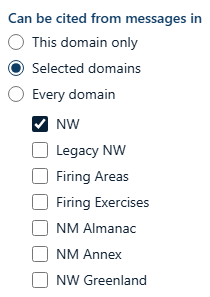
-
This domain only: only the owner domain can see and cite the publication.
-
Selected domains: the domains you tick can cite it as well, but cannot change it.
-
Every domain: every domain can cite it; only the owner can change it.
If you open a publication of another domain, for example from a link, Niord shows Another domain’s publication and offers to switch to its domain:
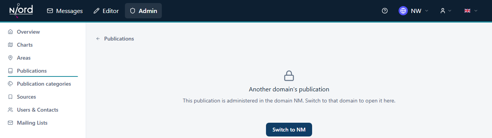
To give a publication to another domain, choose Move to domain… in its cog menu, pick the domain under Move to, type a reason and click Move publication. You need administrator rights in both domains. From then on only the new domain can change the publication, and its future cut-offs are read in the new domain’s time zone; nothing already published changes.
6.16. What the Public Site Shows
An issue or one-off publication is listed on the public site when all three hold:
-
its category has Show on the public site ticked (see Publication Categories);
-
it is published, and not withdrawn;
-
its public period has begun and has not ended.
The site’s Downloads page lists them on the tab Active NtM and Publications, grouped under their categories in the categories' order. Historical NtM and Publications lists the publications of a date range, with a button for each of the last five years.

Download opens the issue’s document. An issue generated from criteria also has Browse, which shows the messages it holds on the public site’s message pages:
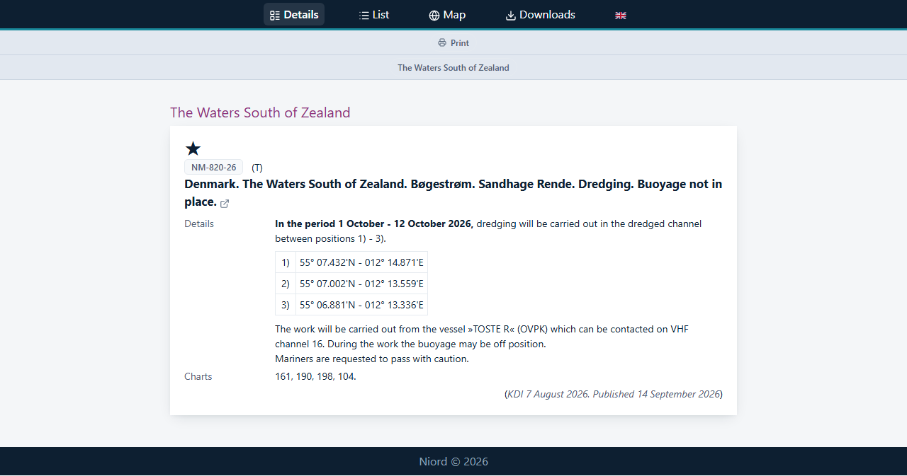
The page lists only the issue’s messages, under their areas, and does not name the issue. While you browse an issue, the bar above the messages offers Print and the areas its messages are in, but not the other filters of the message pages.
In the administration application, editors see which issues a message is in, and cite published issues from the message editor; see the Publications field in the editor manual.
6.17. Importing and Exporting Series Definitions
The cog menu Publication actions on the Publications page offers Export series definitions and Import series definitions. They move the configuration of series between installations, for example from a test system to production.
The file holds the definitions of the series and nothing else: no issues and no categories. It is therefore not a backup of what has been published.
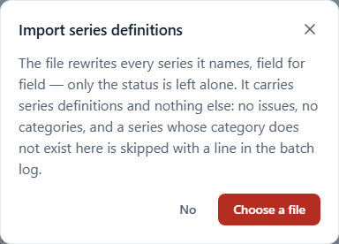
Importing asks first, because the file rewrites every series it names, field for field, leaving only its status alone. A series whose category does not exist in this installation is skipped with a line in the batch job’s log. Click Choose a file and pick the file. The import runs as the batch job publication-series-import, which system administrators can follow on the Batch Jobs page. Nothing is activated by an import: activate the imported series yourself once you have checked them.
An example of one series in the file, a monthly overview generated from the messages published in
each month. A moment in the file, such as firstIssueStartsAt (where the first content period
opens, see Frequency & Naming), is written with its offset from UTC.
[
{
"seriesId": "monthly-overview",
"categoryId": "notices-to-mariners",
"descs": [
{
"lang": "en",
"name": "Monthly overview",
"nameSuggestionPattern": "Overview ${month}/${year}",
"fileNamePattern": "Overview-${year}-${month-2-digits}.pdf"
}
],
"status": "ACTIVE",
"contentMode": "GENERATED_FROM_QUERY",
"cadence": "MONTHLY",
"nominalCutoffDayOfMonth": 1,
"nominalCutoffTime": "12:00",
"numberingScheme": "MONTH_YEAR",
"timeRelation": "PUBLISHED_IN_INTERVAL",
"aliveAtCutoff": true,
"firstIssueStartsAt": "2026-01-01T00:00:00.000+00:00",
"criteria": {
"schemaVersion": 1,
"match": "ALL",
"criteria": [
{ "kind": "messageSeries", "operator": "IN", "values": ["example-nm"] }
]
},
"domainId": "example-nm",
"availability": "ALL_DOMAINS",
"languages": ["en"],
"reportId": "standard",
"pageSize": "A4",
"pageOrientation": "PORTRAIT",
"mapThumbnails": false,
"messagePublication": "NONE",
"releaseMode": "MANUAL_GATE",
"cutoffDefault": "RELEASE_MOMENT",
"nextIssueCreation": "AUTO_ON_PUBLISH",
"languageSpecific": false
}
]7. Publication Categories
Every series and one-off publication belongs to a publication category, such as "Notices to Mariners" or "External publications". The categories do two things:
-
They decide whether a publication reaches the public site at all: only the published issues of a category with Show on the public site ticked are listed there.
-
They group the publications on the public site’s download page, in the categories' order.
Categories are shared by all domains. You manage them on the Publication categories page of the Admin area: open Admin in the main menu, then Publication categories in the menu on the left. The page needs the administrator role.
7.1. The Categories List
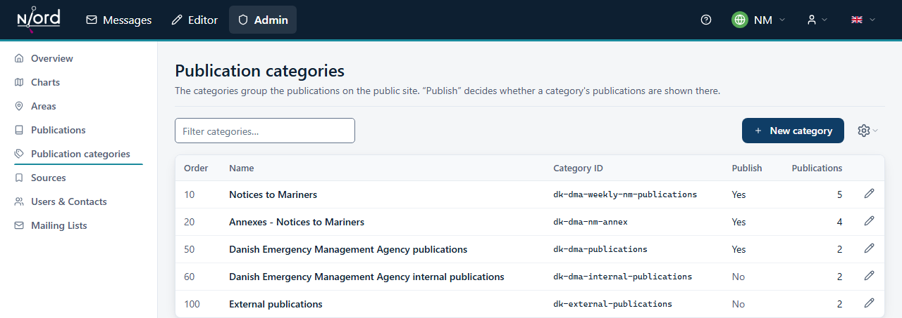
The list shows each category’s Order, Name and Category ID, whether it is shown on the public site (Publish: Yes or No) and how many series and one-off publications belong to it, in all domains (Publications). Type in Filter categories… to narrow the list; the name and the category ID are searched.
When the deployment writes its texts in more than one language, a Model language list in the toolbar chooses the language the list shows the names in. It changes only what the page shows, not the language of the application. With one language, the list is not shown.
7.2. Adding or Editing a Category
Click New category to add a category, or the pencil at the end of a row to edit one. This opens the Publication category drawer:
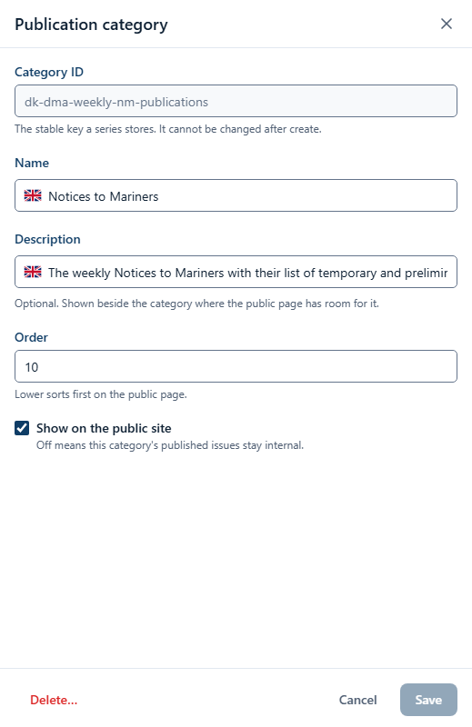
| Field | Description |
|---|---|
Category ID |
The permanent key a series stores. Choose it when you create the category; it cannot be changed afterwards. |
Name |
The category’s name in each language, shown as a heading on the public site. |
Description |
Optional. A longer text about the category in each language, kept with the category and in its export. The public site that comes with Niord does not show it: its download page shows only the category’s name. |
Order |
Where the category is placed on the public site: lower numbers come first. A new category starts at 100, in the middle of the order, so that a lower or a higher number places it before or after the categories that are already there. |
Show on the public site |
Ticked: the published issues of the category’s publications are listed on the public site. Not ticked: they stay internal. A new category starts with this box not ticked. Whether a publication can be cited from messages is set on the publication itself, not here. |
Click Save to keep the changes.
To delete a category, open it and click Delete… at the bottom of the drawer. A category that still has series or one-off publications cannot be deleted: Niord says how many belong to it, and you move them to another category first (in their settings) and try again.
7.3. Importing and Exporting Categories
The cog menu Category actions offers Export categories and Import categories. The export is a JSON file of every category, which you can import into another installation, for example to set up a new one with the same categories.
Importing asks first: the file rewrites every category it names, field for field (its order, whether it is shown on the public site, and every language’s name and description), and every series that belongs to a rewritten category takes its new settings. A category that exists only in this installation is left alone. Click Choose a file and pick the file. The import runs as the batch job publication-category-import, which system administrators can follow on the Batch Jobs page.
An example of the file:
[
{
"categoryId": "notices-to-mariners",
"priority": 10,
"publish": true,
"descs": [
{
"lang": "en",
"name": "Notices to Mariners",
"description": "The weekly Notices to Mariners and the lists that go with them"
}
]
}
]8. Sources
The Sources page keeps a list of the sources that messages name: the authorities, harbours and others that report what a notice or warning is about, each with its usual abbreviation. Editors pick from this list when they fill in a message’s Source field, so the same source is written the same way, in every language. Open the page with Admin > Sources. Sources are shared by all domains.
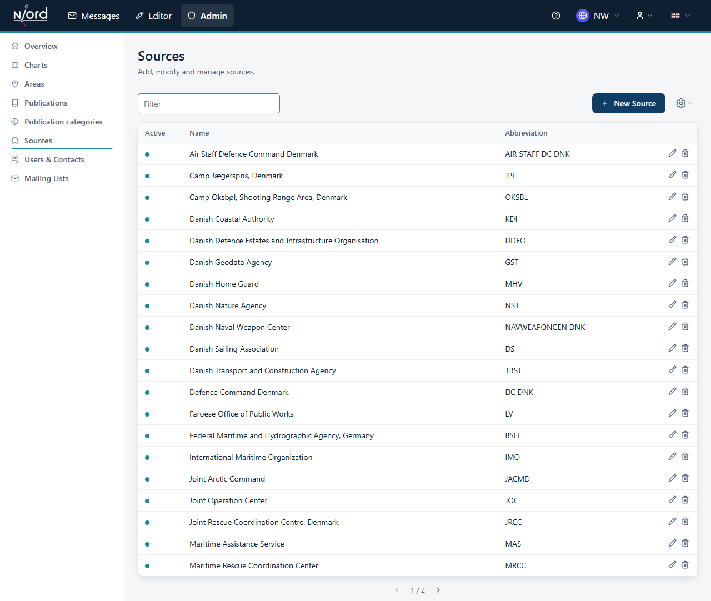
The list shows whether each source is Active (a coloured dot) or inactive (a grey one), its Name and its Abbreviation. It shows 20 sources at a time; the pager below it moves between the pages. To find a source, type in Filter above the list: the text is looked for, in any case, in the names and abbreviations. The cross in the field clears it.
When the deployment writes its messages in more than one language, a Model language list in the toolbar chooses the language the list shows the names and abbreviations in. It changes only what the page shows, not the language of the application. With one language, the list is not shown.
8.1. Adding or Editing Sources
Click New Source above the list to add a source, or the pencil, Edit Source, on a source’s row to change it. The source opens in a drawer, New Source or Edit Source:
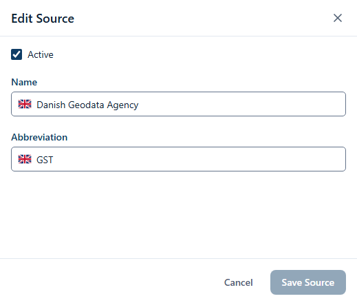
| Field | Description |
|---|---|
Active |
Only an active source is offered to editors in the message editor. A new source is active. |
Name |
The name of the source, with a field for each language the deployment writes its messages in (the flag before each field shows which). The name in the deployment’s default language, a setting of the system administrator (English unless it is changed), is required. |
Abbreviation |
The official abbreviation of the source, in each language. It is optional. |
Save Source saves the source and closes the drawer; it can be clicked once you have changed something and the source has its name. Cancel closes the drawer without saving.
8.2. Deleting a Source
Click the bin, Delete Source, on a source’s row, and confirm with Delete Source?. A message that already names the source keeps its text: the message editor writes the source’s name into the message, so deleting the source changes no message. To keep a source from being picked without losing it, make it inactive instead.
8.3. The Source Field of the Message Editor
Editors add sources to a message in its Source field: Add sources… opens a dialog where they search the active sources of this list, tick the ones to add and give the date of each. The field and the dialog are described in the Source Field section of the User Manual for Editors.
8.4. Importing and Exporting Sources
The cog, Source actions, beside New Source holds the export and the import:
-
Export… opens every source, as JSON, in a new browser tab, where you can save it as a file.
-
Import… opens Upload Sources File: choose a JSON file, or drop it on the dialog. The file is imported by the batch job source-import in the background; Upload Result shows the answer to the upload, and a system administrator can follow the job on the Batch Jobs page. A source in the file that has the name of an existing source, in one of the languages, updates it; any other is added.
The file holds a list of sources in the format of the export, with a descs entry for each
language. For example:
[
{
"active": true,
"descs": [
{
"lang": "en",
"name": "Joint Arctic Command",
"abbreviation": "JACMD"
}
]
},
...
]9. Users & Contacts
The Users & Contacts page manages the people Niord knows. Open it with Admin > Users & Contacts. It has two tabs:
-
Users: the people who sign in to Niord and work in it, with their user groups, which decide what they may do in each domain.
-
Contacts: people who only receive mails from Niord’s mailing lists, and never sign in.
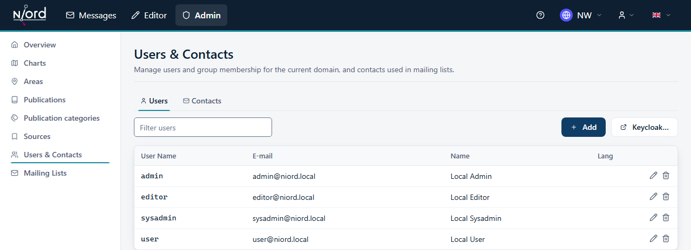
9.1. Users Tab
Niord’s users are kept by the sign-in service, Keycloak (see Niord Users in the System Administrator Manual). The Users tab lists Keycloak’s users and lets you add, change and delete them, and manage their groups, without opening Keycloak.
Because the tab changes Keycloak, it is shown only to an administrator who also holds the role manage-users of Keycloak’s own client "realm-management", which a system administrator gives in Keycloak. An administrator without that role sees only the Contacts tab.
The list shows each user’s User Name, E-mail, Name and preferred language (Lang, as a flag), 20 users at a time. To find a user, type in Filter users above the list: the text is looked for, in any case, in the user name, the e-mail address and the name.
Keycloak…, at the right of the toolbar, opens Keycloak’s own administration pages in a new browser tab, for what this page does not do, such as renaming a user.
Depending on how a deployment is set up, some users are not added here at all: when Keycloak signs people in through another identity service, such as an organisation’s own sign-in, a user is created the first time the person signs in. Such a user still needs to be put in the right user groups here before they can do anything in Niord.
9.1.1. Adding or Editing a User
Click Add to add a user, or the pencil, Edit user, on a user’s row to change one. The user opens in a drawer, Add User or Edit User, on its User details tab:
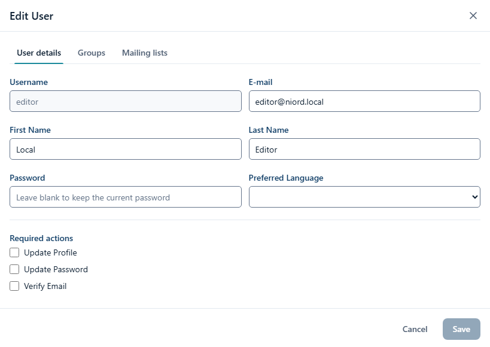
| Field | Description |
|---|---|
Username |
The name the user signs in with. It is required and must be unique. It is set when you add the user and cannot be changed here afterwards (it can in Keycloak, with Keycloak…). |
The user’s e-mail address. It is required and must be unique. |
|
First Name, Last Name |
The user’s name. |
Password |
The user’s password. When you add a user, give a first password. When you change a user, the field is empty: leave it empty to keep the password, or type a new one to replace it. |
Preferred Language |
The language of the mails the user receives from Niord’s mailing lists. Which mail a user with no preferred language receives, and when a user receives none, is described under Mail Subject in Mailing List Triggers. |
Required actions |
What Keycloak asks the user to do at the next sign-in: Update Profile (check the name and e-mail address), Update Password (choose a new password, useful after you gave a first one) and Verify Email (confirm the e-mail address). They are sent to Keycloak when the user is added only; ticking them when you change a user has no effect. |
Save saves the user and closes the drawer; it can be clicked once you have changed something and the user has a username and a valid e-mail address. Cancel closes the drawer without saving.
The tabs Groups and Mailing lists are shown when you edit a user who exists; for a new user, save the user first and open it again.
9.1.2. Managing User Group Membership
A user’s rights are held per domain: a user can be an editor in one domain and only a user in another (see Administrators Manual). With several domains this would make many roles to keep, so roles are not given to users one by one. A system administrator gives the roles to user groups in Keycloak, each group a set of roles in the domains, and you make users members of the groups. The groups of a deployment are set up seldom, and are described in User Groups in the System Administrator Manual.
Open the Groups tab of the user’s drawer:
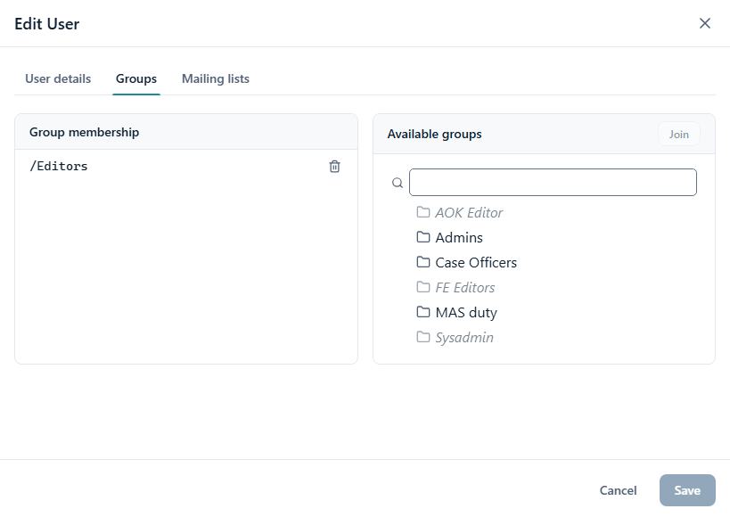
-
Group membership, on the left, lists the groups the user is a member of. The bin, Leave group, takes the user out of a group.
-
Available groups, on the right, holds the other groups as a tree, with a field to filter them. Click a group to select it, then Join to make the user a member.
The changes take effect at once, without Save.
You can only manage a group that gives, in the domain you are working in, a role you hold yourself. Any other group is shown in grey italics and cannot be selected, and when the user is in such a group, it has no bin. An administrator, for example, cannot put anybody, themselves included, in a group that only gives the Sysadmin role. Since the check is made for the current domain, the groups you may give can change when you switch domain in the header.
9.1.3. Managing User Mailing Lists
The Mailing lists tab of the user’s drawer lists every mailing list. The dot in the Member column is coloured when the user is one of the list’s recipients and grey when not:
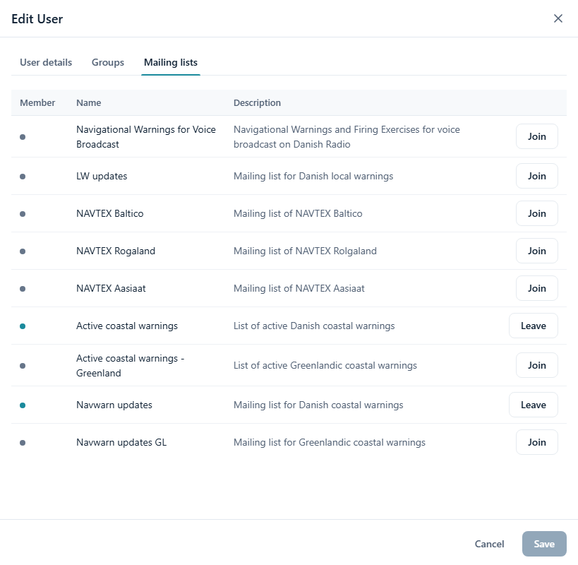
Join makes the user a recipient of the list, and Leave takes the user off it. The change takes effect at once, without Save. The mailing lists themselves are described in Mailing Lists.
9.1.4. Deleting a User
Click the bin, Delete user, on a user’s row, and confirm with Delete user?. The user’s account is deleted in Keycloak at once, whatever the user has done in Niord, and the user can no longer sign in. The messages, comments and history the user made in Niord are kept, with the user’s name.
Niord also takes the user off every mailing list, and off the lists' mails that wait to be sent, and forgets the user’s e-mail address. So no list mails the user any more, the Manage Recipients drawer (Managing Mailing List Recipients) no longer offers the user, and a comment’s E-mail notification no longer suggests the user. Niord does this before it deletes the account, so if the delete fails, the user may already be off the lists: delete the user again. If you create a user again with the same user name, the address comes back but the lists do not: add the user to them again on the Mailing lists tab (Managing User Mailing Lists).
To take away a user’s access but keep the account, take the user out of all groups instead.
9.2. Contacts Tab
A contact is a person or a mailbox that receives mails from Niord’s mailing lists without being a user of Niord: a harbour office, a pilot station, a shipping company. The Contacts tab lists them:
The list shows each contact’s E-mail, Name and preferred language (Lang), 20 at a time, with a line below it that says how many contacts match, and a pager. To find a contact, type in Filter contacts: the text is looked for in the names and e-mail addresses when you stop typing.
9.2.1. Adding or Editing a Contact
Click Add to add a contact, or the pencil, Edit contact, on a contact’s row to change one. The contact opens in a drawer, Add Contact or Edit Contact, on its Contact details tab:
| Field | Description |
|---|---|
The contact’s e-mail address. It is required and must be unique. |
|
Name |
The contact’s name. |
Preferred Language |
The language of the mails the contact receives from the mailing lists, as for a user (Mailing List Triggers). |
Save saves the contact and closes the drawer. Cancel closes it without saving.
9.2.2. Managing Contact Mailing Lists
The Mailing lists tab of the contact’s drawer, shown when you edit a contact who exists, works as for a user (Managing User Mailing Lists): Join and Leave change at once whether the contact receives a list.
9.2.3. Deleting a Contact
A contact that is a recipient of a mailing list cannot be deleted: Niord says Contact operation failed and keeps it. First take the contact off every list on its Mailing lists tab (Managing Contact Mailing Lists). Then click the bin, Delete contact, on the contact’s row, and confirm with Delete contact?.
9.3. Importing and Exporting Contacts
The cog, Contact actions, beside Add holds the export and the import:
-
Export… opens every contact in a new browser tab, one line each, with the e-mail address, the name and the preferred language separated by semicolons. Save it as a file to open it in a spreadsheet.
-
Import emails… opens Import contact emails. Paste a list of e-mail addresses, separated by commas, semicolons or line breaks, and click Import. Each valid address that is not already a contact or a user becomes a new contact; the others are skipped. Niord then says how many contacts it imported. Give the new contacts their names and preferred languages afterwards.
10. Mailing Lists
A mailing list sends mails about messages to a list of recipients: for example a mail each time a navigational warning is published or cancelled, or a daily list of the warnings in force. Each list has one or more triggers, which say when it sends and what the mails hold, and its recipients, who are users and contacts (Users & Contacts).
Open the page with Admin > Mailing Lists. Every administrator manages the recipients of the lists. Creating, changing, copying and deleting lists, their triggers and the import and export are for system administrators only: the buttons for them are shown to a user who holds the Sysadmin role in the current domain. This chapter describes both.
The list shows whether each mailing list is Active (a coloured dot; grey when it is not), its ID, its Name and Description, and the number of its recipients (#Recipients). To find a list, type in Filter: the text is looked for in the ID, the name and the description. A system administrator also sees New Mailing List, the cog Mailing list actions and, on each row, Edit Mailing List (the pencil), Copy Mailing List and Delete Mailing List (the bin).
10.1. Managing Mailing List Recipients
Click the number of recipients of a list, Manage recipients, to open the Manage Recipients drawer:
The drawer has two tabs, Users and Contacts, each with the number of recipients it holds. They work the same way: the Users tab manages the users who receive the list, the Contacts tab the contacts.
-
Selected, on the left, lists the recipients of the list. The bin, Remove, takes one off.
-
Available, on the right, lists the others. The plus, Add, makes one a recipient.
-
Each side has a Filter below it, which looks in the e-mail addresses and the names. Remove all and Add all move every row the side shows, so with a filter typed in, they move only the rows that match it; the number on the button says how many.
The changes of a tab are saved with its own button, Save User Selection or Save Contact Selection. The drawer stays open after a save, so you can go on with the other tab; Close closes it, and Niord asks first when a tab has changes you have not saved.
A user’s or a contact’s lists can also be changed from the other side, on the Mailing lists tab of the user or the contact (Managing User Mailing Lists).
10.2. Creating and Changing Mailing Lists (System Administrators)
10.2.1. Adding or Editing a Mailing List
Click New Mailing List to add a list, or the pencil, Edit Mailing List, on a list’s row to change one. Copy Mailing List opens a new list with everything of the copied one, its triggers included, except its ID and its recipients: give it a new ID and save it. The list opens in a drawer:
| Field | Description |
|---|---|
Mailing List ID |
A unique ID for the list, such as |
Active |
Only an active list sends mails. |
Name |
The name of the list, in each language the deployment writes its messages in. The name in the first language is required. |
Description |
A description of the list, in each language. |
Triggers |
When the list sends, and what; see Mailing List Triggers. |
Save Mailing List saves the list, its triggers included, and closes the drawer. Cancel closes it without saving.
10.2.2. Mailing List Triggers
A trigger decides when the list sends mails and what they hold. A list has one or more of them, each shown as a card in the Triggers part of the drawer. A card is folded to one line that sums it up, for example "Status Change Trigger (Published)" or "Scheduled Trigger (Daily at 7:30 AM Europe/Copenhagen)". On the card’s line:
-
the arrow, Show details or Hide details, unfolds or folds the card;
-
the play button, Test trigger, tries the trigger out (Testing Triggers);
-
Copy trigger adds a copy of the trigger to the list;
-
the bin, Delete trigger, removes it.
Add Trigger, above the cards, adds a new trigger. Every change to a trigger is saved with the list.
What every trigger has:
| Field | Description |
|---|---|
Trigger Type |
Status Change or Scheduled; see below. |
Mail Subject |
The subject of the mails, in each language, each with a tick box before it. A mail is made for
each language whose box is ticked. With one language ticked, every recipient receives that one.
With two or more, each recipient receives the one in the recipient’s preferred language, and a
recipient whose preferred language is not ticked receives none. A recipient without a preferred
language receives English when English is ticked (in a deployment without English, its default
language when that is ticked), and otherwise the first ticked language.
Unticking a language clears its subject.
The subject can hold tokens that are replaced in each mail: |
Mail Body |
The script resources that make the mail’s text: usually one Freemarker template, sometimes with a JavaScript before it that looks up more data. Add path adds one; the magnifier, Select script resource, picks one from a list, the pencil, Edit script resource, opens it, and the arrows put them in order. A trigger without a Freemarker template sends nothing. Script resources are described in the Script Resources chapter of the System Administrator Manual. |
Scheduled Triggers
A scheduled trigger sends its mails at a set time, about the messages that a search finds then.
| Field | Description |
|---|---|
Schedule |
Daily, or one day of the week. |
Time |
The time of day the mails are sent. |
Time Zone |
The time zone the time is read in. A scheduled trigger cannot be saved without one: until it has one, the field says that a scheduled trigger needs a time zone, and Save Mailing List stays disabled. |
Message Query |
The search that chooses the messages the mails are about, written as the parameters of a message
search, for example |
Allow public execution of mailing list report |
When ticked, the trigger can also be run as a report from the action menu of the Messages page, without sending any mail; see the Report Action section of the User Manual for Editors. |
Status Change Triggers
A status change trigger sends its mails when a message gets one of the chosen statuses and matches the filter. Its mails are about that one message.
| Field | Description |
|---|---|
Statuses |
The statuses that set the trigger off: Published, Cancelled and Expired. |
Message Filter |
A condition the message must meet as well, written as a JavaScript expression about |
10.2.3. Testing Triggers
The play button on a trigger’s card, Test trigger, opens Test Trigger Execution. It tests the trigger as it stands in the drawer, before you save it, so you can try a change first; the recipients are those of the saved list, so save a new list or a copy once before you test it.
For a status change trigger, pick the message to test with in Test Message; the browser remembers it for the next test. Then click Execute. The trigger runs, but no mail is sent: the dialog lists the mails it made, with whom each is To and its Subject. Click a mail to see it under Details. The picture tests the status change trigger of a list with one published warning.
10.2.4. Deleting a Mailing List
Click the bin, Delete Mailing List, on a list’s row, and confirm with Delete Mailing List?. To stop a list without losing it, make it inactive instead.
10.2.5. Importing and Exporting Mailing Lists
The cog, Mailing list actions, beside New Mailing List holds the export and the import:
-
Export… opens every mailing list, with its triggers, as JSON in a new browser tab, where you can save it as a file. The recipients are not part of it.
-
Import… opens Upload Mailing-Lists File: choose a JSON file, or drop it on the dialog. The file is imported by the batch job mailing-list-import in the background; Upload Result shows the answer to the upload, and the job can be followed on the Batch Jobs page. A list in the file with the ID of an existing list updates it; any other is added.
The file holds a list of mailing lists in the format of the export. For example:
[
{
"mailingListId": "nw-daily",
"active": false,
"descs": [
{
"lang": "en",
"name": "Navigational warnings in force",
"description": "A daily list of the navigational warnings in force"
}
],
"triggers": [
{
"type": "SCHEDULED",
"scheduleType": "DAILY",
"scheduledExecutionTime": "07:30",
"scheduledExecutionTimeZone": "UTC",
"messageQuery": "messageSeries=example-nw&status=PUBLISHED&sortBy=ID",
"scriptResourcePaths": [
"templates/mailinglist/active-navwarns.ftl"
],
"publicReport": true,
"descs": [
{
"lang": "en",
"subject": "Navigational warnings in force ${date-short}"
}
]
}
]
},
...
]A status change trigger has "type": "STATUS_CHANGE", its statuses in statusChanges (for
example [ "PUBLISHED" ]) and its filter in messageFilter, instead of the schedule and the query.